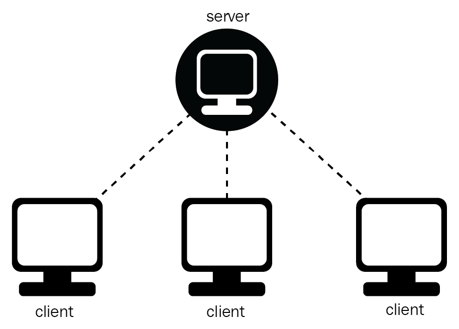
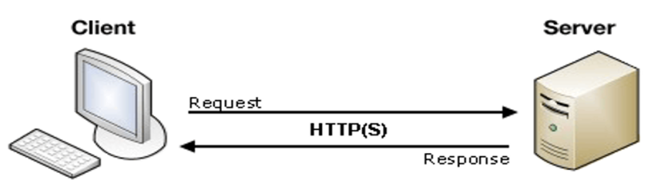

Ưu điểm của mô hình
-
Giúp chúng ta có thể làm việc trên bất kì một máy tính nào có hỗ trợ
giao thức truyền thông. Giao thức chuẩn này cũng giúp các nhà sản xuất
tích hợp lên nhiều sản phẩm khác nhau mà không gặp phải khó khăn gì.
-
Có thể có nhiều server cùng làm một dịch vụ, chúng có thể nằm trên nhiều
máy tính hoặc một máy tính.
-
Chỉ mang đặc điểm của phần mềm mà không hề liên quan đến phần cứng,
ngoài yêu cầu duy nhất là server phải có cấu hình cao hơn các client.
-
Hỗ trợ người dùng nhiều dịch vụ đa dạng và sự tiện dụng bởi khả năng
truy cập từ xa.
-
Cung cấp một nền tảng lý tưởng, cho phép cung cấp tích hợp các kỹ thuật
hiện đại như mô hình thiết kế hướng đối tượng, hệ chuyên gia, hệ thông
tin địa lý (GIS).


dan toi link youtube
" frameborder="0">